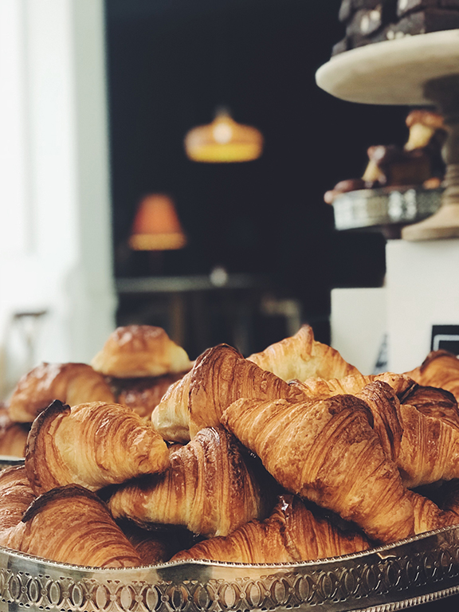

BANTOKU ถือกำเนิดมาเมื่อปี ค. ศ. 2000 โดยเริ่มจากร้านค้าขนาดเล็กที่โตเกียว
เกิดจากความตั้งใจของคนรักขนมปังของคุณทานากะและภรรยาเจ้าของกิจการ
Bantoku ได้ดำเนินธุรกิจในประเทศญี่ปุ่นประกอบธุรกิจบริการอาหารหลายรูปแบบ
ทั้งขนมปังเค้กและได้มาเปิดสาขาใหม่ที่ประเทศไทยเป็นที่แรกเมื่อปี 2010